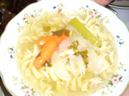

Place 4 breast of chicken (bone in) in large pot of water Add 3 large onions (quartered length wise) Bring to boil on medium/high Skim off foam and discard. Add 4-6 buillion cubes a few at a time as needed by scooping water from the pot into a measuring cup to dissolve cubes. Pour into pot and stir. Add salt pepper fresh parsley. Cook for ½ hour (approx.) on med./high heat Add carrots (almost entire bag of peeled baby carrots) Add celery cut off tips use tops and leaves. - Do not use bottom halves Cook on medium heat for awhile. Turn down to low 3 when vegetables seem cooked. Cook noodles on acini Pepe or egg noodles Drain pasta Serve soup add pasta cut chicken one piece at a time and add in to each dish Serve and enjoy Place 4 breast of chicken (bone in) in large pot of water Add 3 large onions (quartered length wise) Bring to boil on medium/high Skim off foam and discard. Add 4-6 buillion cubes a few at a time as needed by scooping water from the pot into a measuring cup to dissolve cubes. Pour into pot and stir. Add salt pepper fresh parsley. Cook for ½ hour (approx.) on med./high heat Add carrots (almost entire bag of peeled baby carrots) Add celery cut off tips use tops and leaves. - Do not use bottom halves Cook on medium heat for awhile. Turn down to low 3 when vegetables seem cooked. Cook noodles on acini Pepe or egg noodles Drain pasta Serve soup add pasta cut chicken one piece at a time and add in to each dish Serve and enjoy |
|
 |